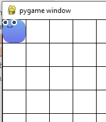

Our first pygame - continuous movement - part 6
continuous movement
The game Worm should have the worm moving even when you don’t have any keys pressed, unless the game has paused.
So we will make a small change to allow the worm to keep moving in its last direction selected.
First we need to keep track of the last key pressed - regardless of the last key released. Why? Well I thought it was nice to be able to tap a key then release the one doing the current moving. You can use the last direction moved while keys were being held. I chose not to.
We add one more line to or input class’s init. It now looks like.
def __init__(self) -> None:
self.key_queue = []
self.last_key_pressed = "none"
and we set the last key pressed in the same place we set our key queue.
if event.key in [K_s, K_DOWN]:
self.last_key_pressed = "D"
self.key_queue.append("D")
if event.key in [K_w, K_UP]:
self.last_key_pressed = "U"
self.key_queue.append("U")
if event.key in [K_d, K_RIGHT]:
self.last_key_pressed = "R"
self.key_queue.append("R")
if event.key in [K_a, K_LEFT]:
self.last_key_pressed = "L"
self.key_queue.append("L")
we add a function to read it
def get_last_direction_chosen(self):
match (self.last_key_pressed):
case "U":
return (0,-1)
case "D":
return (0,1)
case "L":
return (-1,0)
case "R":
return (1,0)
return (0,0)
and then before the game loop we set a variable to be continuous
continuous = True
right now we the variable is hardcoded. It is a flag to tell the code the behaviour we want. We can change that later if needed.
at the end of our “reached destination code” we add 3 lines above the last (plus spacing). here it is including the last line
if (continuous and new_direction == (0,0)):
direction = held_keys.get_last_direction_chosen()
else:
direction = new_direction
I also noticed we set a varable eaten with food but never use it. We can delete it.
We run the code and we see the head moving around the board, after we have pressed a direction key at least once. If it easts food the food reappears elsewhere.
Ok so lets add a face to our worm, and when it eats some food we let it grow a tail. For now a body part will simply stay where we ate the food. It will also become part of a list we call the tail.
player creation now looks like
#player
player = pygame.image.load("assets/player/blue_body_squircle.png")
player_body = pygame.image.load("assets/player/blue_body_circle.png")
player_face = pygame.image.load("assets/player/face_a.png")
player = pygame.transform.scale_by(player, 0.5 )
player_body = pygame.transform.scale_by(player_body, 0.5 )
player_face = pygame.transform.scale_by(player_face, 0.5 )
player_loc = player.get_rect()
player_loc.center = TILESIZE[0]/2, TILESIZE[1]/2
player_tail = []
we added a body a face and a tail
Copy face_a and blue_body_circle png files into our player folder.
After we eat food in the same if statement we need this line of code
player_tail.append(player_loc)
And where we draw the food and player we need this
screen.blit(food, food_loc)
for t in player_tail:
if t != player_loc:
screen.blit(player_body,t)
screen.blit(player, player_loc)
screen.blit(player_face, player_loc)
We draw the face on top of the player where the player currently is. The face needs to be centered.

The player uses player and player_loc, and while location is one way of saying it, it is easier to keep track of by calling it what it is. Its a rectangle and it has a ceneter so lets rename that to player_rect. If you not using the ide’s rename whic takes care of all references then dont forget to name all of them. PS replace all from the text serach and replace is dangerous.
so we end up with
#player
player = pygame.image.load("assets/player/blue_body_squircle.png")
player_body = pygame.image.load("assets/player/blue_body_circle.png")
player_face = pygame.image.load("assets/player/face_a.png")
player = pygame.transform.scale_by(player, 0.5 )
player_body = pygame.transform.scale_by(player_body, 0.5 )
player_face = pygame.transform.scale_by(player_face, 0.5 )
player_rect = player.get_rect()
player_face_rect = player_face.get_rect()
player_rect.center = TILESIZE[0]/2, TILESIZE[1]/2
player_face_rect.center = player_rect.center
player_tail = []
this starts the face in the right place - lets keep it in the right place. We set the center of the rect the same as the player center
screen.blit(player, player_rect)
player_face_rect.center = player_rect.center
screen.blit(player_face, player_face_rect)
You will notice if you follow along with the git, I have several commits for each post. It is easier to keep your git commits small and frequent, in case you want to go back a bit and only keep some changes.
The next git commit I renamed the classes, I did this to match the pygame. Stick with python standards whenever possible.
In the next post we refactor the player to keep the players code in one place and not spread all over. Eventually we discover a list of texture poistions is insufficient for the tail and we decide to use some of the player code. I refactor further and use inheritance. These are object oriented concepts and you could stick with lists and functions if you prefer.